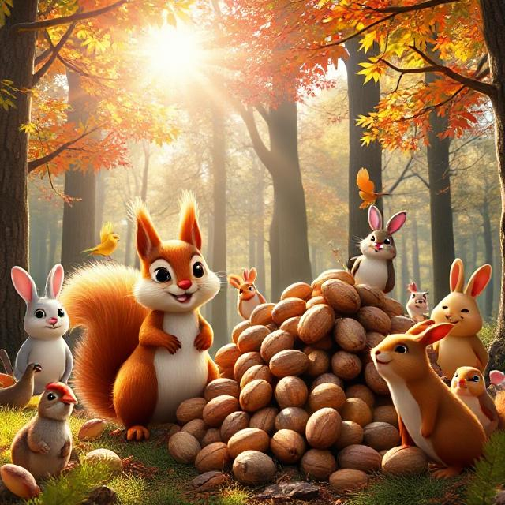

In a quiet corner of the forest, two squirrels lived in a cozy nest made of moss and twigs.
One was named Mini. She was small, speedy, and curious. She could race from tree to tree faster than any squirrel in the woods.
The other was Big. He was large, gentle, and thoughtful. His steps were slow, but he never missed a detail.
Even though they were very different, Mini and Big were the best of friends.
The Golden Acorn
One morning, Mini woke up with a loud gasp.
“Our golden acorn is gone!”
It was their most special acorn — shiny, round, and perfect. They had saved it for winter.
Mini zipped around the nest in a panic. “We have to find it! Let’s go! Now!”
Big yawned and stretched. “Let’s think about where it could be first.”
But Mini was already out the door, calling back, “Come on!”
Searching Together
Mini darted through bushes and leaped between branches.
“Maybe a bird took it!” she shouted.
Big followed slowly, looking carefully at the ground. “No feathers… no bird.”
They checked under rocks, behind trees, and even inside a hollow log.
Finally, Big paused near a pile of leaves. “Something shiny is poking out…”
Mini ran over, pushed the leaves aside, and squealed with joy.
“It’s our golden acorn!”
Different but Better Together
Big smiled. “You found it with your speed.”
“And you found the clue with your thinking,” Mini said.
They gave each other a high-paw and shared the acorn under their favorite tree.
That night, Mini curled up against Big’s fluffy belly and whispered, “We’re the best team.”
Big nodded, eyes closing. “Because we’re not the same. We’re better together.”